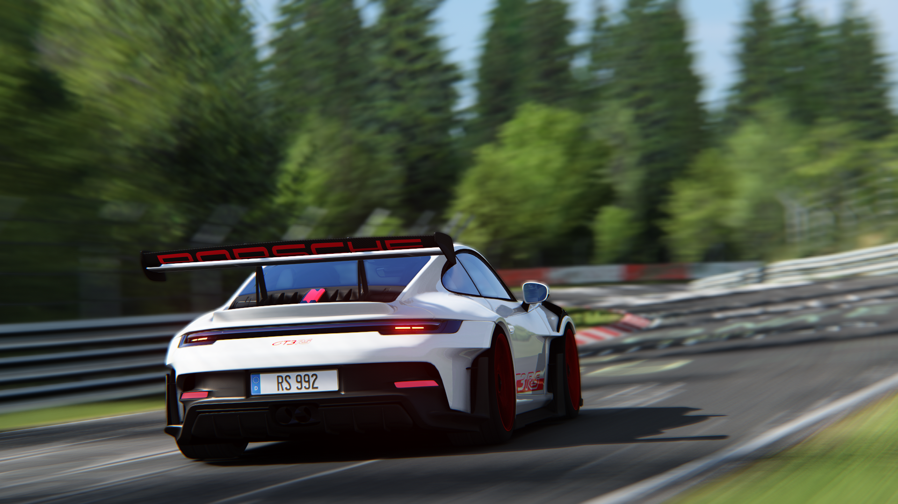

Nurburgring, Lebih dari Sekadar Sirkuit
10 Hal Menarik
Penyuka otomotif dan motorsport pasti sudah sangat mengetahui Nurburgring. Inilah tempat yang identik dengan apa pun yang berbau otomotif dan motorport.Sirkuitnya sudah pasti sangat terkenal dan jadi tuang rumah balap superbike WSBK dan Formula 1 (F1). Bagi industri otomotif, Nurburgring kerap dijadikan tempat uji coba performa. Utamanya untuk supercar dan hypercar. Sejatinya, ada dua bagian di Nurburgring. Sirkuitnya itu sendiri dengan panjang lintasan 5,148 kilometer. Lalu, Nordschleife yang merupakan jalan bebas hambatan berkelok yang mengelilingi Nurgburgring. Panjang lintasan kelilingnya 20,9 kilometer. Baik Nurburgring dan Nordschleife merupakan satu bagian. Berikut 10 hal menarik soal Nurburgring dan Nordschleife tentunya.
Disneylandnya Motorsport
Terletak 92 kilometer di selatan Kota Cologne dan 30 kilometer di sebelah timur perbatasan Belgia, Sirkuit Nurburgring yang terkenal itu berada.Itulah jantung motorsport Jerman, menarik jutaan pengunjung setiap tahun. Nurburgring jadi tempat di mana berbagai kejadian bersejarah terjadi.Termasuk berbagai rekor ditorehkan di sana selama hampir satu abad. Semua yang memiliki roda telah diuji atau ikut berlomba di tempat itu. Ada dua jalur berbeda yang melengkapi Nurburgring: trek untuk Grand Prix dan Loop Utara atah Nordschleife yang jaraknya 19 kilometer dari situ.
Trek Grand Prix Utama
Sirkuit Nurburgring sangat dikenal sebagai tuan rumah Kejuaraan Dunia Superbike dengan jadwal rutin tiap Oktober. Tapi sebenarnya, lebih dari itu. Nurburgring adalah fasilitas besar yang terletak di Pegunungan Eifel Jerman. Memiliki tempat khusus di hati para penggemar motorsport yang hanya di Jerman tapi juga di seluruh dunia. Lintasan Grand Prix (GP) dibangun pada 1984 dan saat ini jadi tuan rumah berbagai kejuaraan dunia. Selain WSBK, Formula 1 (F1), DTM, dan berbagai macam kompetisi roda empat lainnya. Kompleks Nurburgring Ring Werks berada di pintu masuk sirkuit GP. Pada tempat ini Anda dapat membeli Nissan GTR jika atau puas dengan kemeja Polo Ferrari dalam perjalanan ke tribune di trek lurud 928 meter. Tempat ini memiliki segalanya. Trek gokar, roller coaster, toko, restoran; bir yang diseduh secara lokal, dan memorabilia motorsport jadi daya tarik utama di Ring Werks. Agar tidak menggunakan uang tunai, kartu Ring dapat membayar apa saja di seluruh fasilitas Nurburgring. Kartu tersebut dapat dibeli di mesin khusus di sekitar sirkuit atau di toko-toko di dalam Ring Werks.
Lebih dari Sekadar Aspal Berkelok
Selama ada event besar, Ring Werks dan sekitarnya dipenuhi dengan mobil dan motor yang eksotis. Tidak jarang melihat McLaren dan Ducati Desmosedici RR diparkir bersebelahan. Lalu, pemiliknya mengobrol tentang jalur yang mereka ambil di tiap sudut di Nordschleife. Semua orang bisa menikmati dua trek di Nurburgring. Festival musik tahunan Rock em 'Ring, balapan sepeda, dan triathlon juga diadakan di Nurburgring ini.Ada pula puluhan kilometer jalur bersepeda gunung dan hiking yang menghadap ke hutan Eifel dan Kastil Nurburg. Jadi, Nurburgring adalah tempat segalanya. Bagi yang kurang menyukai motorsport, banyak menu lain yang tersedia di tempat ini.
Neraka Hijau Nordschleife
Pembangunan Sirkuit Nordschleife mulai dibangun pada 1923 dan dibuka pada 1927. Hingga 1980 jadi tuan rumah MotoGP yang saat itu dianggap terlalu berbahaya. Sebagai gambaran, trek Nurbugring jadi bagian dari trek besar Nordschleife yang artinya Lingkaran Utara. Penghalang Armco sejajar dengan sebagian besar jalur sepanjang 20,8 km di Nordschleife. Sejatinya, Nordschleife adalah jalanan aspal berliku yang sangat mirip trek balap tapi berada di jalan raya. Dengan jalur bergemuruh dan serpihan kerikil, Nordschleife memiliki perubahan ketinggian lebih dari 300 meter. Ada 40 tikungan kiri dan 50 tikungan kanan yang menantang pengendara dan mesin. Sebagian besar tikungan buta dan ruang yang sangat kecil untuk melakukan kesalahan. Legenda Formula 1 Jackie Stewart menciptakan istilah "Neraka Hijau" sebagai nama panggilan Nordschleife dan nama tersebut terus digunakan hingga sekarang.
Ini Jalan Tol
Pintu masuk ke area Nordschleife memiliki gerbang yang tampak normal seperti yang Anda lihat di garasi parkir atau bandara. Pengendara hanya diminta untuk menggesek kartu ring untuk masuk, kemudian lampu hijau berikutnya dan lengan gerbang pengangkat seperti meminta throttle penuh. Bentangan jalan sepanjang 20,8 km membutuhkan biaya sebesar 27 euro (sekitar Rp467 ribu) untuk melaju satu putaran.Ini unik lantaran sirkuit ini berada di bawah hukum dan peraturan yang sama dengan jalan tol lainnya di Jerman. Ini bentuk pariwisata yang berbeda. Dibuka beberapa hari dalam sepekan selama musim semi dan musim panas.
Aturan
Pelat nomor di UE (Uni Eropa), Inggris, Prancis, dan lain-lain di Eropa yang hanya boleh masuk gerbang. Semua kendaraan di Nordschleife harus digunakan di jalan raya saja. Sepeda kayuh atau mobil balap tidak boleh melewati gerbang. Dengan tidak adanya polisi sehingga tidak ada batas kecepatan. Artinya, di tol Norsdschleife boleh memacu mobil sekencang mungkin. Memang, tidak hanya aturan jalan Jerman yang diberlakukan di Nordschleife tapi ada beberapa rambu yang harus dipatuhi selama perjalanan. Tapi, tetap ada petugas di luar trek yang mengawasi jika ada yang lepas kendali atau kecelakaan. Bagi petugas, ini adalah pekerjaan yang sibuk menangani ribuan pengunjung selama akhir pekan musim panas.
Bahayanya
Memacu mobil dengan kecepatan tinggi melalui sudut buta adalah proposisi yang menggembirakan meski tragis dan Nordschleife melihat kecelakaan di situ setiap hari. Helikopter penerbangan penyelamat milik ADAC (German Automotive Association) didedikasikan untuk melayani Nordschleife setiap hari sepanjang tahun buka. Ada alasan mengapa tidak ada lagi balapan sepeda motor di Nordschleife karena sudutnya terlalu sempit. Ada beberapa petak gravel tetapi sebagian besar sirkuit jalan raya dilapisi dengan pohon pinus dan penghalang Armco. Oli yang tumpah dari tabrakan mobil dan bebatuan di jalan bukanlah jadi hal yang biasa saat mengendarai Nordschleife.
Pemecah Rekor
Pada 2012, seorang Inggris yang pemberani bernama Andy Carlile berlari di Nordschleive dengan Yamaha R1 2005 dalam waktu 7 menit 10 detik. Ini jadi sebuah rekor tidak resmi untuk sepeda motor karena penghitung waktu putaran, kamera on-board,dan uji waktu dilarang pada hari-hari mengemudi di depan umum. Waktu putaran Carlile sangat mencengangkan mengingat dia melewati kendaraan lain di lalu lintas Nordschleife saat memecahkan rekor putaran.
Selamatkan Nurburgring!
Krisis ekonomi pun menerpa. Berdampak pula kepada Sirkuit Nurgburgring yang sebenarnya dimiliki oleh pemerintah negara bagian Rhineland-Palatinate dan bukan oleh entitas swasta. Pernah ada rumor Nurburgring ingin dijual pada 2015 tapi tak jelas siapa pembelinya. Bernie Ecclestone, pemilik F, dikaitkan dengan rumor ini meski tak terbukti. Namun sebelum itu, pemerintah Jerman sudah mengambil tindakan. Pada tahun 2012 lebih dari 300 juta dolar disisihkan untuk menjaga Nurburgring. Semua fasilitas di sana tetap terbuka dan dioperasikan oleh pemerintah Rhineland-Palatinate. Meski demikian, rumor kebangkrutan Nurburgring terus saja menghantui dan biar waktu yang menjawabnya. Pastinya, masyarakat Jerman dan Eropa begitu mendambakan Nurburgring tetap ada seperti halnya masyarakat Amerika Serikat terhadap Nascar.